An early screening system for detecting flat feet in children aged 4–6.
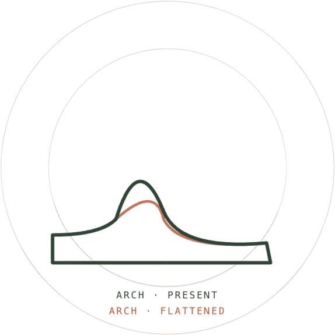
As a child’s arch collapses and the foot rolls inward, the misalignment can affect posture, movement, and mobility — often causing fatigue no one connects back to their feet. At four to six, arches are still developing, so the signs are easy to wave off as a normal stage of growth.
Illustrative figures from our research phase. Flat-foot signs trend downward as arches develop naturally — exactly why the cases that don’t resolve are so easy to overlook.
We mapped the problem across the people who see it first, then went and watched kids move.
Parents worry. Teachers notice. Pediatricians diagnose.
Balance, coordination, and endurance are affected.
Most visible during play.
Often overlooked during early childhood.
Early detection supports healthier movement.
Observing 25 children during play revealed that nearly one-third showed visibly flattened arches — none of which had been previously identified.
Parents described recurring signs — uneven shoe wear, avoiding active play — but rarely connected them to flat feet.
Supportive footwear usually shows up only after symptoms do, missing the window for early intervention.
Rather than voicing discomfort, kids quietly change how and where they play.
Flat feet can influence posture, balance, and movement as children grow.
Symptoms show up at home but read as a normal part of growing up.
We diverged wide — smart socks, sensory mats, augmented-reality scanners — before converging on a format parents already trust.
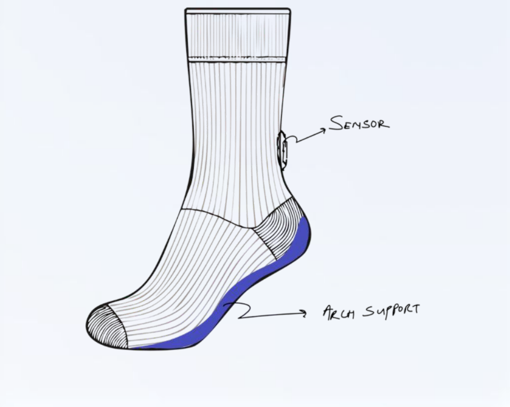
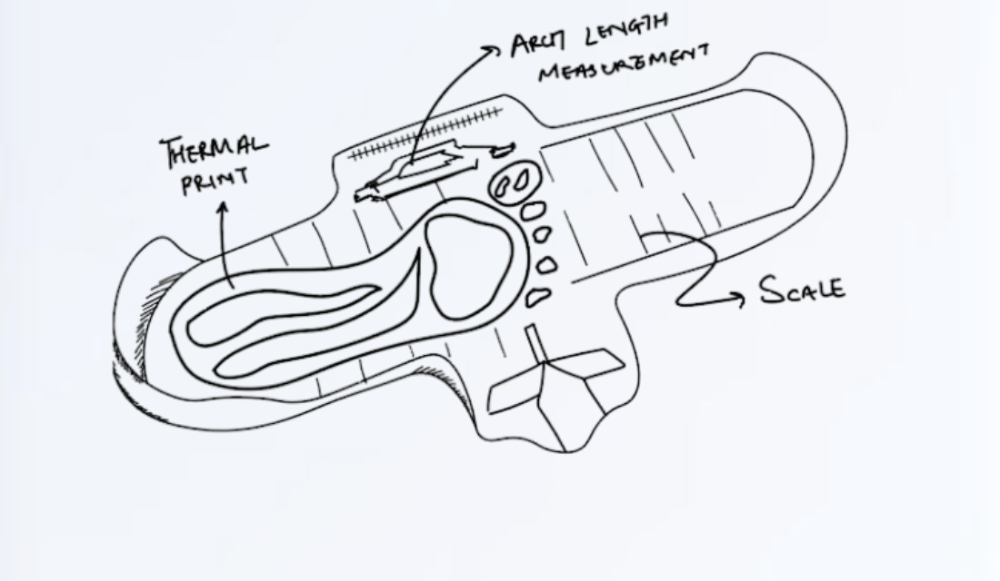
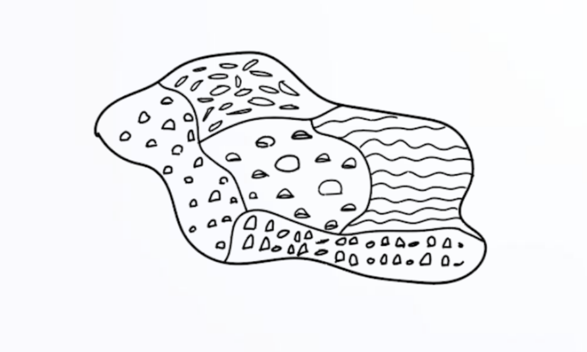
Parents already trust the height-and-weight check. That familiar, low-friction shape became the brief.
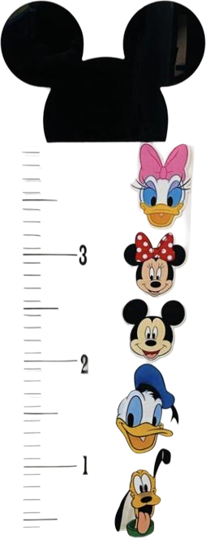
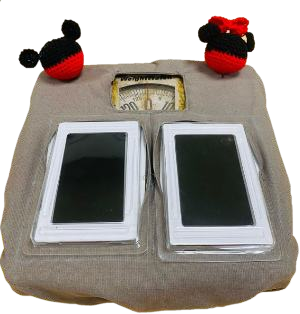
A standard scale reading, tracked over time like any pediatric visit.
A wall-mounted scale for the height-to-weight ratio parents already read.
Two footplates capture an arch profile in the same thirty seconds — the reading nobody used to take.
We named the device the Arch Station and paired it with BMIF, a companion app that turns three readings into something a parent — and eventually the child — can actually understand. The Arch Station brings three familiar measurements into one check-up, adding the reading traditional pediatric screenings miss.
BMIF exists so a flagged footprint never dead-ends into worry. Every screen after the result points toward something the family can actually do.
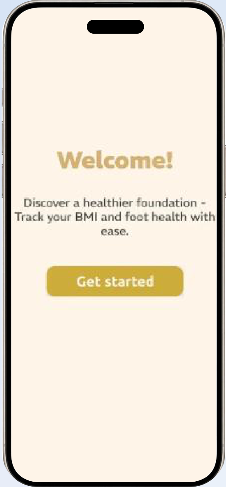
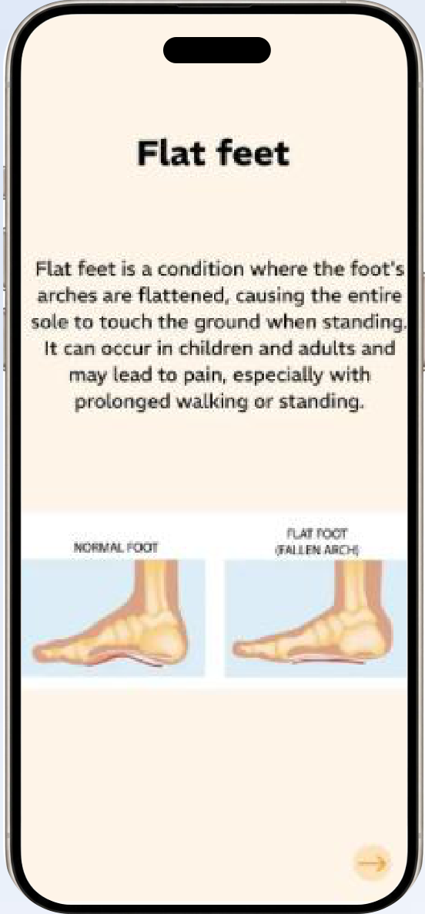
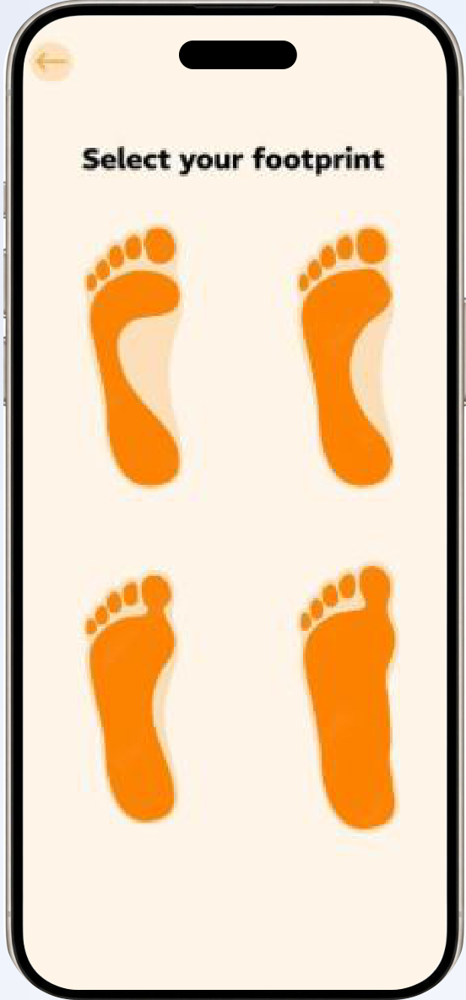
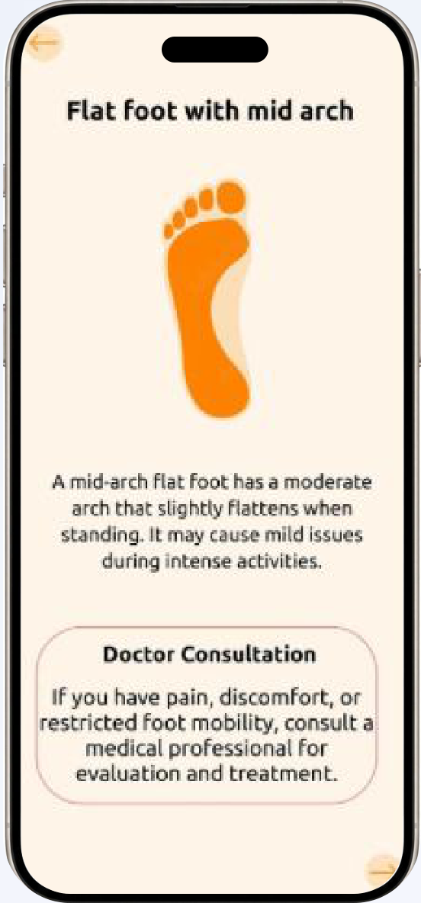
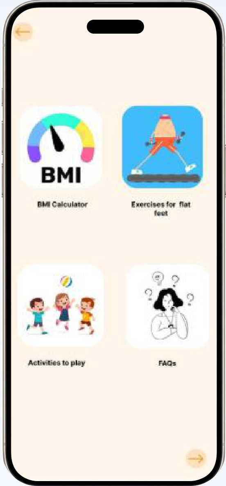
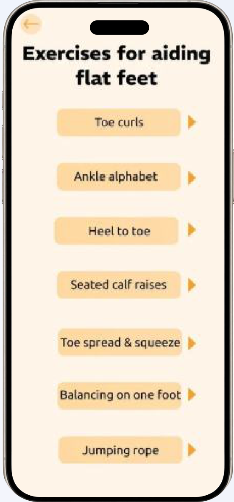
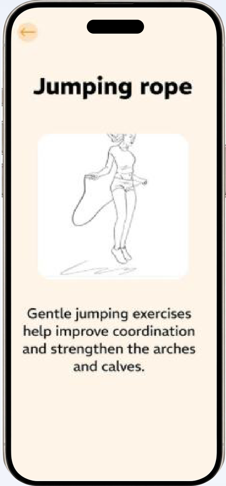
A screening result is only valuable if it leads to consistent action. The therapy mat extends the digital experience into physical play — helping children strengthen their feet through guided, engaging activities.
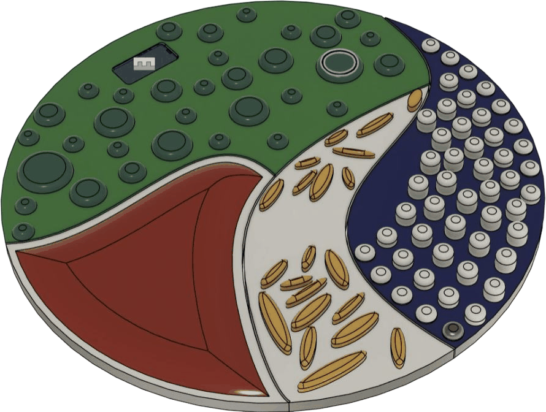
Longitudinal health-tracking
Printable visit summaries
Multi-child profiles